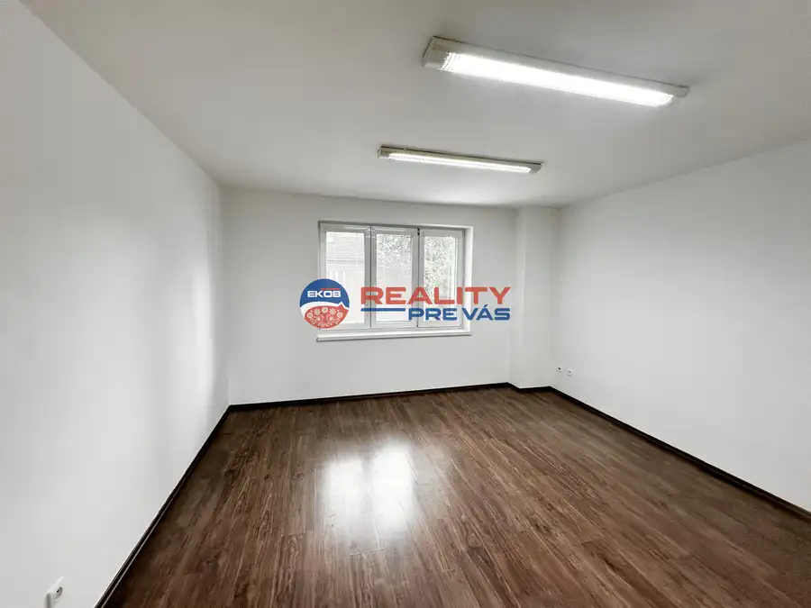
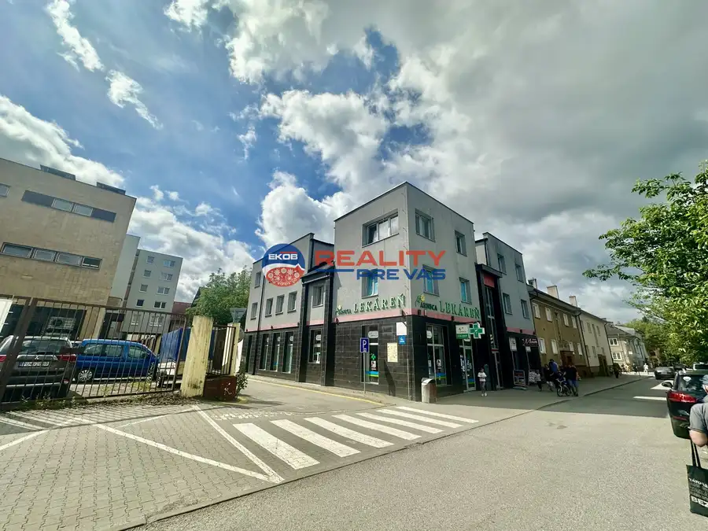
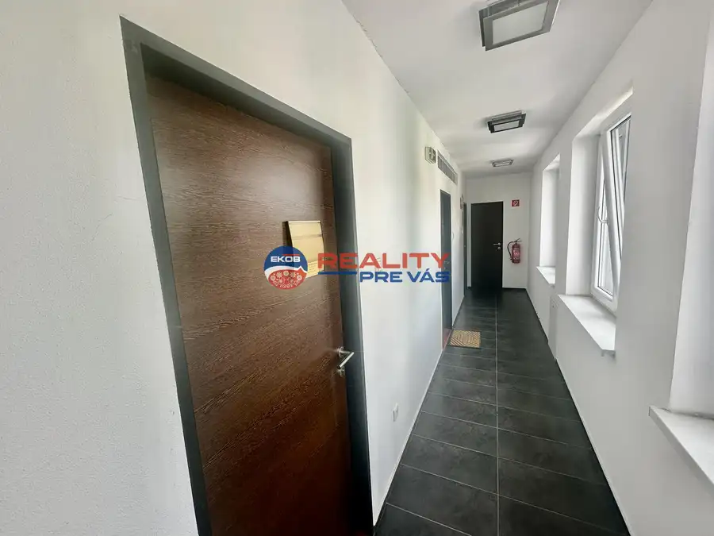
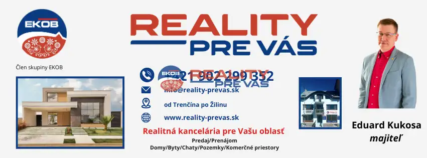
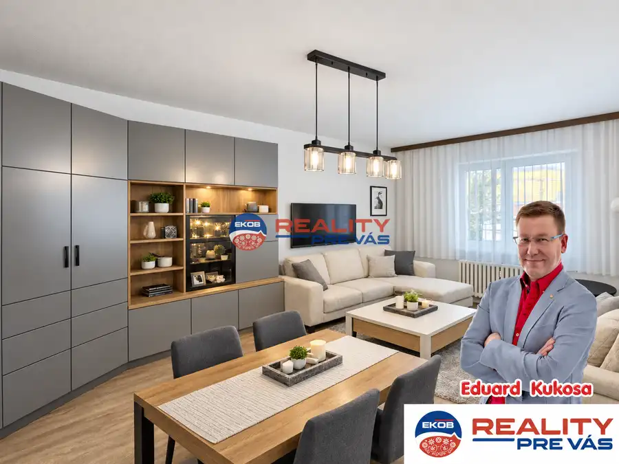
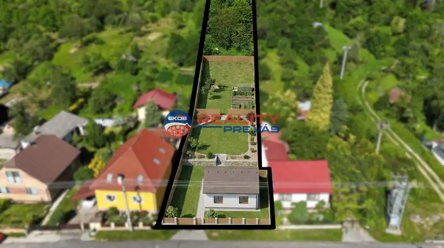
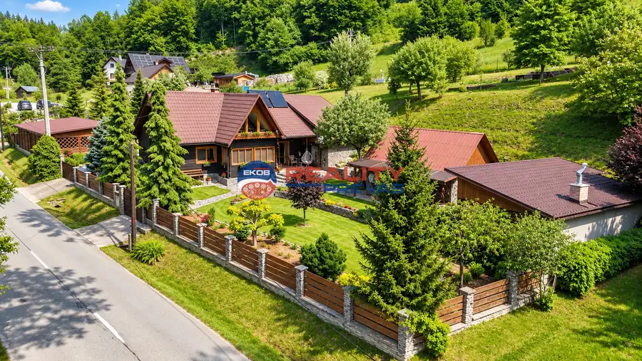

Kancelársky priestor v centre mesta 29 m2 - Púchov
Púchov




- Plocha29 m²
- StavNovostavba
- VlastníctvoOsobné
O nehnuteľnosti
Reality Pre Vás - Eduard Kukosa ponúka na prenájom :Kancelária v centre mesta 29 m21, poschodie v novostavbe na najfrekventovanejšej ulici mesta PúchovKrásne čisté prostredie Cena nájmu 220,-Eur / mesiac bez DPHEnergie 64,55 Eur/mesiac bez DPHCelkom nájom : 284,55 Eur/mesiac bez DPH (345,- Eur/mesiac s DPH)Spoločné toalety na jednotlivých poschodiach Prístup nonstop - každý nájomník má vlastný prístupový kľúč od hlavného vchoduVšetky náklady na províziu RK platí vlastník nehnuteľnostiInternet možný pro dohode - intranet budovy 50/s cena ca 8,- Eur/mesiac bez DPH Kontakt: Eduard KukosaEKOB - Reality Pre Vás +421 902 299 352web: reality-prevas.skemail: eduard.kukosa@reality-prevas.sk
Parametre
- Druh
- Administratívny objekt
- Dátum zverejnenia
- 20. 02. 2026
- Energetický certifikát budovy
- nie je
- Energie
- 64
- Orientácia
- Východná
- Počet izieb / miestností
- 1
- Rok kolaudácie
- 2008
- Rok výstavby
- 2008
- Stav nehnuteľnosti
- Novostavba
- Telekomunikácie
- Internet
- Typ
- Prenájom
- Typ konštrukcie
- Zmiešaná
- Vlastníctvo
- Osobné
- Úžitková plocha
- 29 m²
Kde to je


Mohlo by Vás zaujímať

BytNové 139 000 €3 izbový byt s možnosťou vlastnej úpravy centrum Púchov Púchov 3-izbový74 m²1. podlažie
PozemokNové 129 000 €Bývajte v súkromí veľkého pozemku len 5 minút od Púchova! Nimnica 1750 m²
DomNové 329 000 €Reality Pre Vás - Na predaj Chalupa / Rodinný dom v prírode Lazy pod Makytou 208 m²